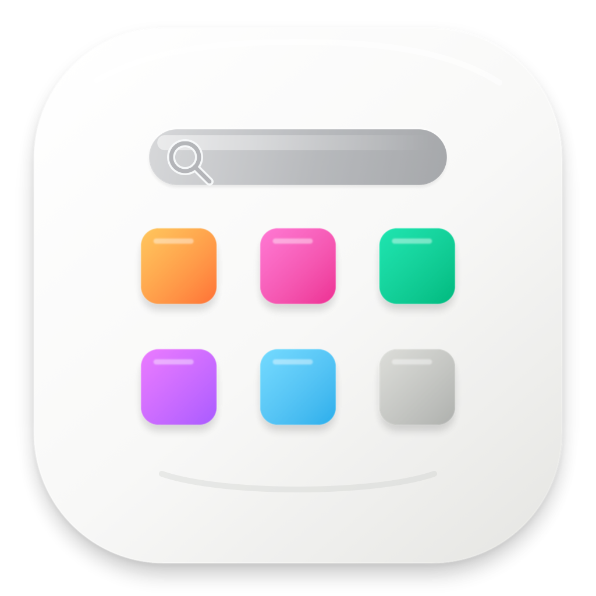
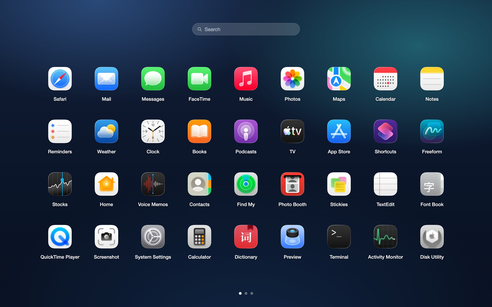

全屏分页网格
以熟悉的网格方式浏览应用，支持触控板横向翻页和键鼠操作。

LaunchpadPro
以熟悉的网格方式浏览应用，支持触控板横向翻页和键鼠操作。
拖拽创建文件夹，重命名、移入、移出。内容很多时自动在文件夹内滚动。
最多保存 3 个布局快照。不同工作状态之间，可以一键恢复。
打开后直接输入应用名，快速过滤并启动目标应用。
支持快捷键、菜单栏、触发角和 URL Scheme，按你的习惯打开。
DMG 内的应用是通用二进制，同时支持 Apple Silicon 和 Intel Mac。